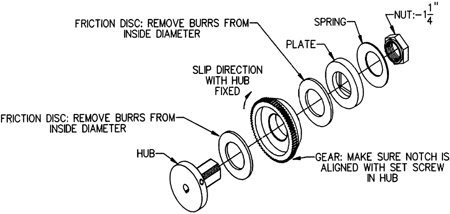

Operating Documentation
Direction 5114045-800, Rev# 10
LightSpeed 4.X Service Information (Advanced)
Operating Documentation |
Occasionally, CT scanner owners have reported cradle velocity errors.This occurs while driving into the gantry, and with the cradle loaded down by a patient. There have also been reports of a potentiometer to encoder correlation error, but this error is more likely caused by a problem with the longitudinal encoder assembly, specifically the pot. or pot. drive belt and sprockets.
The most likely cause for the velocity error is an out-of-adjustment clutch on the cradle drive assembly. This clutch is adjusted to slip when a force of 36-39 pounds is exerted horizontally on the cradle while driving into the gantry. When the clutch slips, the velocity of the cradle will be far enough out of normal range to trigger an error, which stops the drive. Ideally, this would not occur within the normal operating range of less than 36 pounds. However, when the clutch is out of adjustment, it will slip at lower drive forces that are within the normal range of operation. A one-direction roller-clutch, inside the clutch assembly, prevents any slipping when driving out of the gantry.
Although traction problems between the drive roller and cradle could exist, they are unlikely due to the rough bottom surface of the cradle, and due to the weight of the patient maintaining the contact between the cradle and roller. Another unlikely cause would be roller smoothness; the harder cradle surface is intentionally molded with a rough surface, which slightly distorts the roller's softer rubber surface, creating the high coefficient of friction. Generally, traction problems only occur when there is no patient weight to keep the cradle in contact with the roller. In this case, the shimming between the cradle and the carriage should be reviewed.
During the manufacturing of the clutch friction discs, a burr on the inside diameter of the disc (which relaxes after a period of time) was created, causing the clutch to go out of adjustment after leaving the factory. One of two courses of action can be followed, depending on the amount of time available for repair, availability of new parts, and availability of a force gauge:
The existing clutch can be adjusted. This is the quickest procedure, since it does not require the cradle drive to be removed from the table. However, this is a two-person procedure, and requires a force gauge. Also, since the burrs have not been removed, the adjustment may not be maintained for a long period of time.
The clutch can be disassembled, the burrs removed, and the clutch then reassembled and adjusted. This is the most time consuming procedure, but does not require a new clutch. However, this is a two-person procedure, and requires a force gauge and cradle drive removal.
Push force gauge, 0-50# or 0-100# (P/N 46-308109P2)
5/64” and 1/8” hex key wrenches
1 1/4” open-end wrench or channel-lock pliers with this capacity
Loctite 242
Push force gauge, 0-50# or 0-100#
5/64” and 1/8” hex key wrenches
1-1/4” open-end wrench or channel-lock pliers with this capacity.
Loctite 242
Sandpaper, 220 grit
Illustration 1 is provided as a reference drawing for the clutch assembly. Please review this illustration to familiarize yourself with the various parts of the clutch assembly before beginning any procedure.
Illustration 1: Table Clutch Assembly

Place at least 100# on the cradle, toward the gantry end.
Remove the cradle drive cover from the bottom of the table.
Locate the clutch on the left end of the drive roller. Loosen the two set screws securing the 11/4” hex nut with the 5/64” hex wrench. If necessary, release and move the cradle to rotate the drive roller and clutch, to gain access to the set screws.
Position the cradle about 3 feet from home. Tighten the hex nut a small amount (1/4 flat), and then measure the driving force into the gantry with the force gauge. Drive the cradle with the table-side controls at the fast speed, while the FE reaches through the gantry with the force gauge pushing on the end of the cradle. Push hard enough for the clutch to slip, and note the reading on the gauge. Insure that the drive roller is stationary (i.e., not slipping on the cradle bottom), and that the end of the clutch (i.e., hex nut) is rotating when the measurement is taken. If the roller is slipping on the cradle, then add more weight to the cradle.
For proper adjustment, the gauge reading should be as close to 40# as possible, but must not exceed 40#. An ideal range is 36-39#. Repeat step 4 until the correct force is measured. Loctite and tighten the set screws and verify the reading again.
A check must now be made to see if the cradle releasing solenoid and gear rack are properly adjusted. Removing the cradle will make this check easier to perform and more accurate. Follow the procedure Cradle Assembly Replacement, for removing the cradle.
When the solenoid is energized, the gear rack is engaged in the clutch gear and allows the cradle to be driven. The engagement of the rack in the gear must not have any backlash, nor can the solenoid plunger be excessively extended out of the solenoid body. When correctly set, the solenoid plunger will be within 0.010" of bottoming-out in the body, when there is no backlash at the rack/gear interface.
Adjust the solenoid bracket so that the plunger is bottomed when the solenoid is energized, and then move the bracket forward (toward the gantry) until there is no backlash between the rack and gear, as checked at four, 90 degree apart, positions on the gear. The solenoid should be energized so that all the looseness is removed from the linkage; if energizing is not possible, be sure to push on the plunger itself (not the pin or link) when checking the adjustment.
Refit the cradle drive cover.
Follow the procedures Cradle Drive Amplifier Replacement and Cradle Drive Assembly Replacement for removing the cradle drive from the table.
Locate the clutch on the left end of the drive roller. Loosen the two set screws securing the 11/4” hex nut with the 5/64” hex wrench. Remove the hex nut from the clutch, along with the spring washer, hub plate, friction washer, gear with one-way bearing, and the second friction washer. Do not remove the clutch hub itself.
Inspect the inside diameter of both friction washers for burrs. Remove any burrs with the sandpaper. Clean the dust and particles from the washers and then reassemble in reverse order; hand tighten the hex nut. Note that the friction washers are centered by the roller clutch that is pressed into the gear.
Refit the cradle drive assembly according to the procedures in Cradle Drive Amplifier Replacement and Cradle Drive Assembly Replacement.
Position the cradle about 3 feet from home. Tighten the hex nut a small amount (1/4 flat), and then measure the driving force into the gantry with the force gauge. Drive the cradle with the table-side controls at the fast speed, while the FE reaches through the gantry with the force gauge pushing on the end of the cradle. Push hard enough for the clutch to slip, and note the reading on the gauge. Insure that the drive roller is stationary (i.e., not slipping on the cradle bottom), and that the end of the clutch (i.e., hex nut) is rotating when the measurement is taken. If the roller is slipping on the cradle, then add more weight to the cradle.
For proper adjustment, the gauge reading should be as close to 40# as possible, but must not exceed 40#. An ideal range is 36-39#. Repeat Step 5 until the correct force is measured. Loc-tite and tighten the set screws and verify the reading again.
A check must now be made to see if the cradle releasing solenoid and gear rack are properly adjusted. Removing the cradle will make this check easier to perform and more accurate (see Cradle Assembly Replacement).
When the solenoid is energized, the gear rack is engaged in the clutch gear and allows the cradle to be driven. The engagement of the rack in the gear must not have any backlash, nor can the solenoid plunger be excessively extended out of the solenoid body. When correctly set, the solenoid plunger will be within 0.010" of bottoming-out in the body, when there is no backlash at the rack/gear interface.
Adjust the solenoid bracket so that the plunger is bottomed when the solenoid is energized, and then move the bracket forward (toward the gantry) until there is no backlash between the rack and gear, as checked at four, 90 degree apart, positions on the gear. The solenoid should be energized so that all the looseness is removed from the linkage; if energizing is not possible, be sure to push on the plunger itself (not the pin or link) when checking the adjustment.
Refit the cradle drive cover.